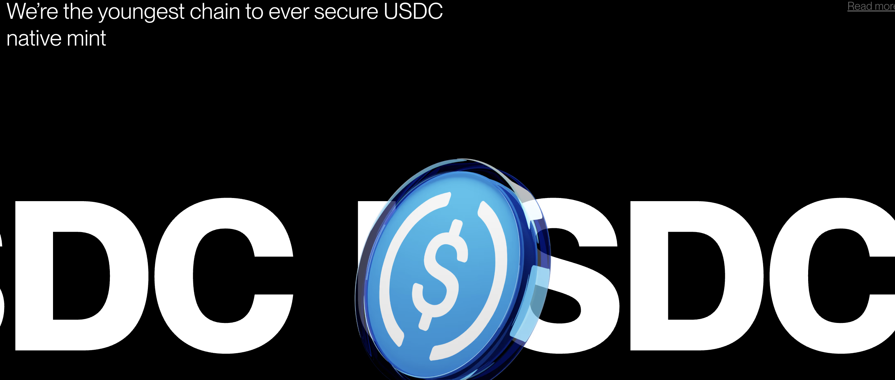
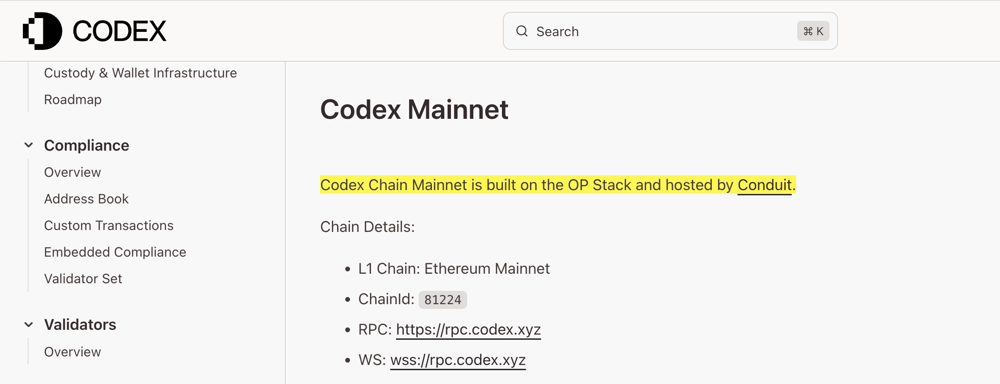
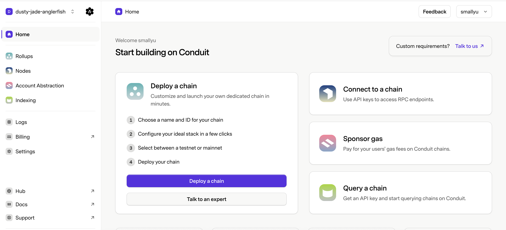

Vitalik 前几天发了个 推文，说低手续费的稳定币是加密货币的重要力量，而 Codex 是一个专注于解决稳定币问题的以太坊 Layer2。让我们来看看 Codex 是如何做到稳定币的 native chain 的。
之前提到的 Arc 项目有很多存在技术疑点的地方，比如如何实现稳定币支持手续费？这实际上不是一件简单的事情，尤其是不想魔改 Geth 的话。看看 Codex 能解决这个问题吗。
难道 Codex 的定位是和 Arc 强市场吗？竟然在首页上大屏幕放 USDC 的 logo。
要留意的一点是，Codex 的首页上没有 Github 链接，也没有白皮书链接，这通常不是一个好的技术信号。不过另一方面，Native USDC 已经在 Codex 这条链上，所以 Codex 的企业背景和公司实力本身没有问题。
本来想说遇到这样的项目很头疼，既没有代码也没有白皮书，我分析啥。然后翻了翻文档，大多数是一些概述性质的东西，没有实质内容。
终于翻到了 最后一个章节 的页面，就这一句话，真相大白，什么问题都清楚了：
这里的 Conduit 是干什么的呢？Baas 平台、一键启动一条 Layer2，就这么回事！
Codex 的性质，和 Camp Network 一样。
Conduit 的收费比 Gelato 稍微贵一点点，主网需要 5000美元/月，测试网 250美元/月。不过这点钱和整个项目与网络的营收比起来，应该无所谓了。
所以怎么样呢，是不是这样就理解了，为什么 Codex 的首页，既没有白皮书也没有代码？事情就是这样。
最难以让人理解的一点是，Vitalik 竟然在支持这样的项目，Vitalik 是技术出身，难道丝毫不在意一个项目的技术含量吗？